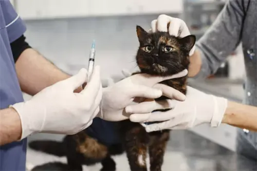

Castración

Ofrecemos servicios de castración para perros y gatos, garantizando un procedimiento seguro y profesional.
La castración ayuda a controlar la población de mascotas y prevenir ciertas enfermedades. Nuestro equipo está altamente capacitado para asegurar que el procedimiento se realice de manera segura.
Cementerio para Mascotas

Un lugar digno y respetuoso para despedir a tus mascotas. Ofrecemos servicios de cremación y entierro.
Nuestro cementerio para mascotas ofrece un ambiente tranquilo para despedir a tus seres queridos. Disponemos de varias opciones de servicios para satisfacer tus necesidades.
Juegos y Actividades

Contamos con una variedad de juegos y actividades para mantener a tus mascotas felices y saludables.
Ofrecemos espacios dedicados para que tus mascotas puedan socializar y ejercitarse. Además, contamos con una variedad de juguetes y actividades diseñadas para estimular su mente y cuerpo.
Vacunaciones
Realizamos todas las vacunas necesarias para mantener a tu mascota protegida contra enfermedades.
Las vacunas son cruciales para prevenir enfermedades graves. Ofrecemos un calendario de vacunación adaptado a las necesidades de tu mascota, siguiendo las recomendaciones de los veterinarios.
Desparasitaciones

Ofrecemos tratamientos efectivos para la desparasitacion interna y externa de tu mascota.
La desparasitacion es esencial para mantener a tu mascota libre de parásitos. Realizamos análisis y tratamientos adecuados para garantizar su bienestar.
Chequeos Generales

Realizamos chequeos generales para asegurar que tu mascota esté en óptimas condiciones de salud.
Los chequeos regulares ayudan a detectar problemas de salud antes de que se conviertan en condiciones graves. Evaluamos la salud general de tu mascota y recomendamos tratamientos si es necesario.
Urgencias

Atención de emergencias para tu mascota en cualquier momento del día.
Nuestra clínica está equipada para manejar emergencias y proporcionar atención urgente a tu mascota. Estamos disponibles 24/7 para cualquier situación crítica.